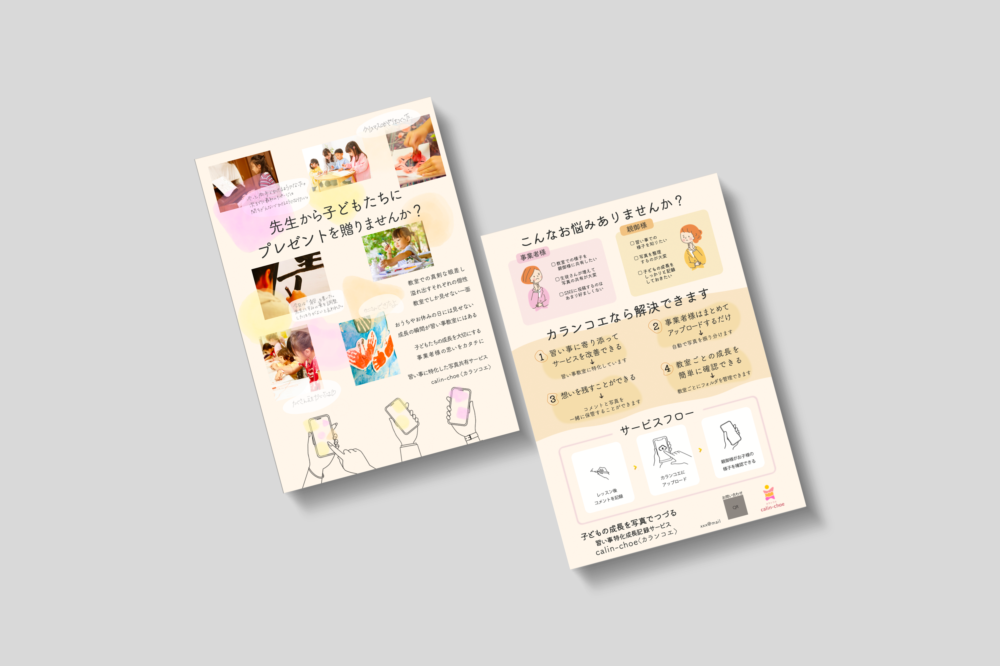
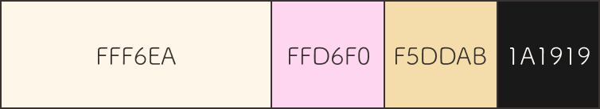
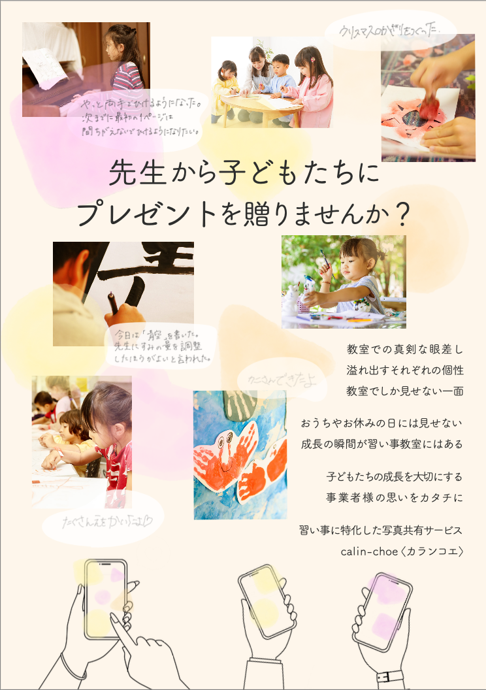
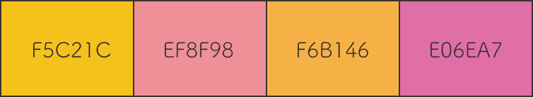

「思い出による成長」をコンセプトにロゴを、
「興味を惹かれる」をコンセプトにチラシを制作しました。
デジタルハリウッドスクールのクライアントワークで制作しました。
習い事に特化した写真共有サービス「カランコエ」を紹介する
20代-40代
習い事教室
保護者の方と習い事中の風景や作品を共有したい
習い事での思い出がその子の成長につながって欲しいと思っている
1ヶ月
デザイン
プレゼン

表面はクライアント様のメッセージを、裏面はサービスの内容を載せ、クライアント様の想いを知った上でサービス内容を知ることができるようにしました。
表面は、手に取った人にメッセージを読んでもらいたいと考えましたが、少し長く、中央に配置すると文字の割合が多く感じてしまうため、文字サイズを少し小さくし、視線の終着点である右下に配置しました。
裏面は、サービスで解決することのできる悩みなどを初めに挙げ、共感・興味を持ってもらうことでサービス内容がより魅力的に感じられるようにしました。
サービスフローは項目を少なくし、簡単に使用することができると感じられるようにし、また、イラストを使用することで感覚的に使い方を理解できるようにしました。
裏面(左下)にもサービス名と簡単な概要を載せることで、裏面を上にして机の上などに置いていたとしても何のチラシなのかがわかるようにしました。
ロゴは、カランコエという花から色を抽出し、明るい配色にしました。

表面では、メッセージを伝えながらも利用した未来のことを想像できるよう、スマートフォンのイラスト、習い事をしている子ども達の写真、作品の写真を配置しました。
表面の写真横の手書きのコメントは、子どもの成長を感じられるよう、小さい子が写っている写真のコメントでは利き手でないほうで文字を書き、子どもが書いた文字に見えるようにしました。
このサービスは、習い事の風景を想像してもらうものではなく、実際の写真を見てもらうものなので、表面の写真はあえて角を丸くせず、実際に使用した際の共有される写真を想像できるようにしました。


ロゴは、カランコエという花から色を抽出しました。
パステルカラーの方が優しく親しみやすさが出るが、視認性に欠けたため、彩度をあげました。

サービスを利用して思い出が積み重なっていくことを、縦に色を積み重ねることで表現しました。
人型にし、手足の大きさをバラバラにすることで、成長していることを表現しました。